Bear
Input: Four multi-view LDR images captured at different exposures, without camera poses or an initial point cloud.
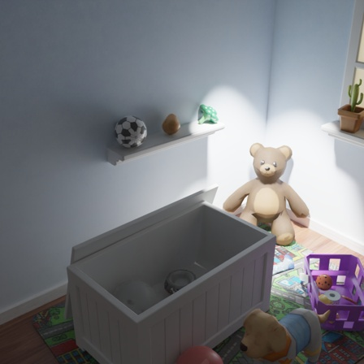
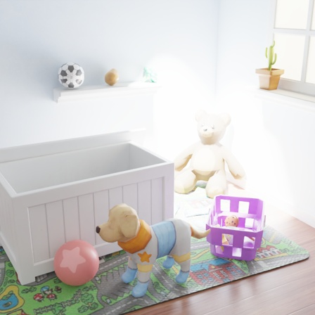
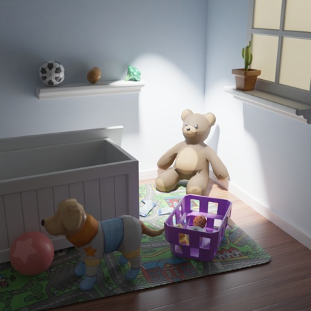
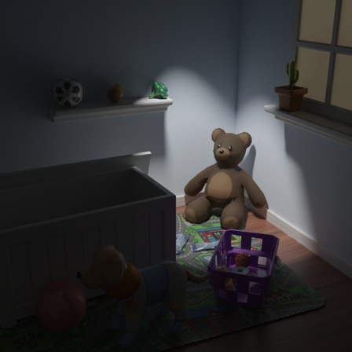
ECCV 2026
1 Johns Hopkins University2 Shenzhen University* Equal contribution
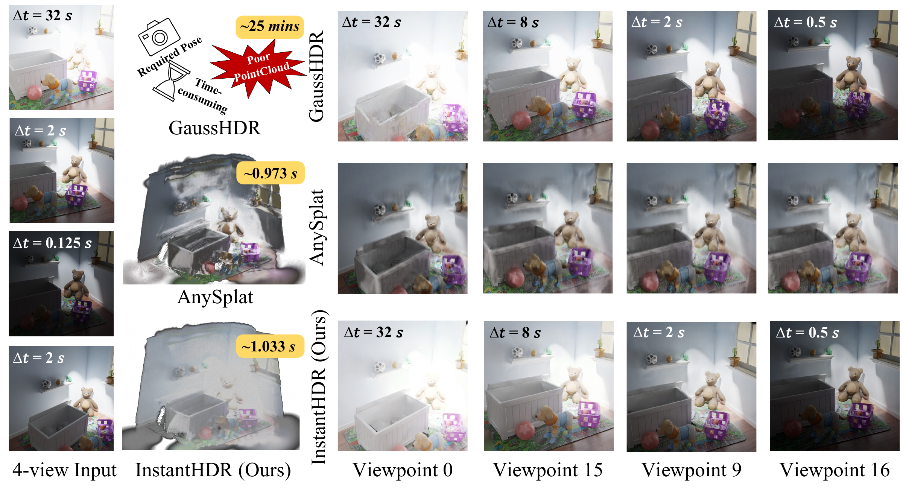
High dynamic range (HDR) novel view synthesis (NVS) aims to reconstruct HDR scenes from multi-exposure low dynamic range (LDR) images. Existing HDR pipelines heavily rely on known camera poses, well-initialized dense point clouds, and time-consuming per-scene optimization. Current feed-forward alternatives overlook the HDR problem by assuming exposure-invariant appearance. To bridge this gap, we propose InstantHDR, a feed-forward network that initializes 3D HDR scenes from uncalibrated multi-exposure LDR collections in a fast single forward pass. Specifically, we design a geometry-guided appearance modeling for multi-exposure fusion, and a meta-network for generalizable scene-specific tone mapping. Due to the lack of HDR scene data, we build a pre-training dataset, called HDR-Pretrain, for generalizable feed-forward HDR models, featuring 168 Blender-rendered scenes, diverse lighting types, and multiple camera response functions. Comprehensive experiments show that our InstantHDR delivers a single-forward HDR initialization at ∼700× the speed of SoTA optimization-based methods, and reaches comparable quality in real settings after lightweight post-optimization while remaining ∼20× faster. All code, models, and datasets: https://github.com/Bugjudger/InstantHDR.
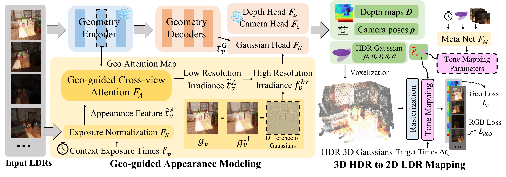
Geometry-guided appearance fusion. We reuse attention from the frozen geometry branch to find cross-view correspondences and fuse complementary exposure information. Difference of Gaussians restores fine pixel-level details lost during patch-level fusion.
Scene-specific tone mapping. A meta-network predicts a lightweight tone mapper for each scene, adapting to camera response differences and enabling exposure-controlled rendering.
HDR pretraining. HDR-Pretrain provides 168 synthetic scenes with varied lighting and camera responses, supporting generalizable feed-forward HDR reconstruction.
Novel-view rendering on Bear, Box, and Chair, comparing GaussHDR, AnySplat, and InstantHDR.
Input: Four multi-view LDR images captured at different exposures, without camera poses or an initial point cloud.




Input: Four multi-view LDR images captured at different exposures, without camera poses or an initial point cloud.
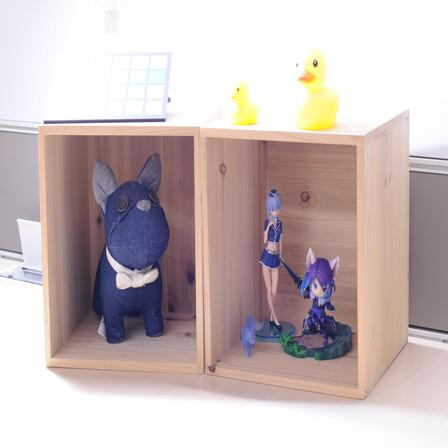
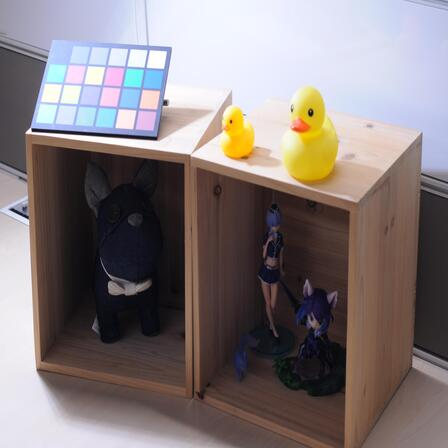
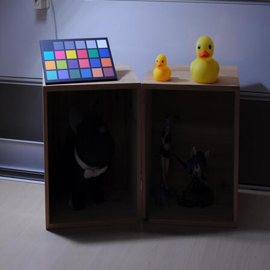
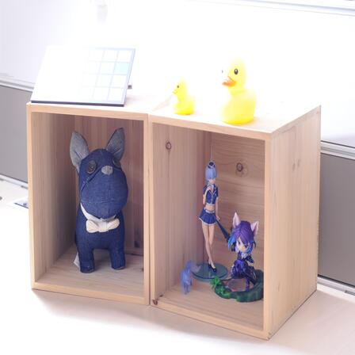
Input: Multi-view LDR images captured at different exposures, without camera poses or an initial point cloud.
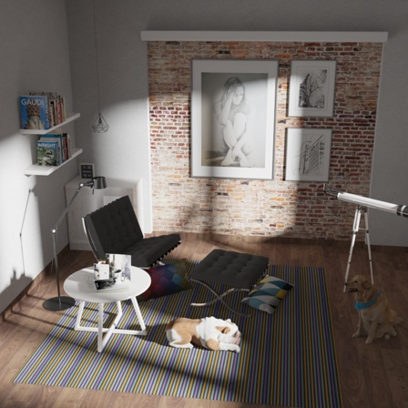
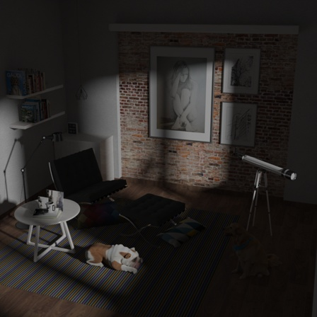
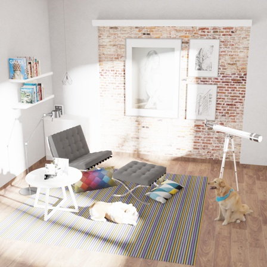
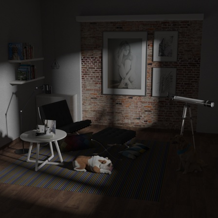
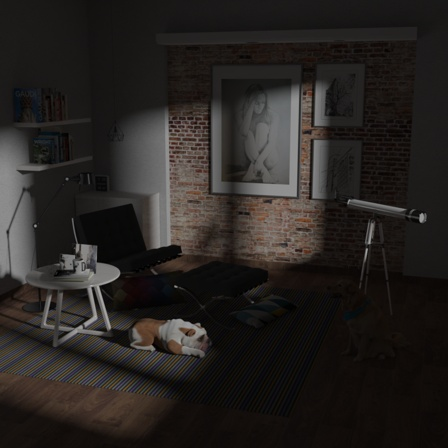
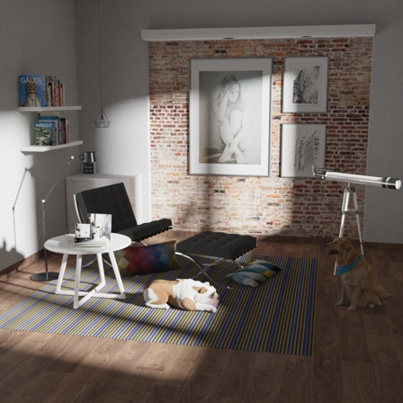
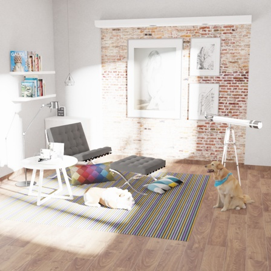
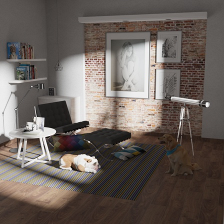
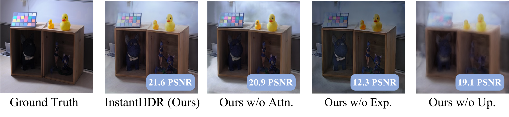
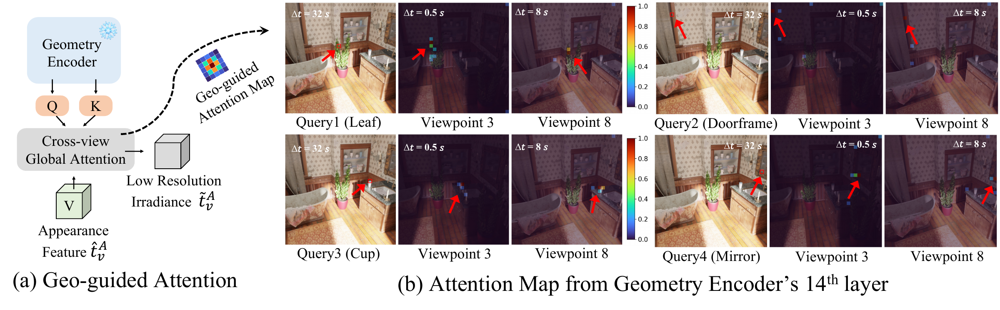
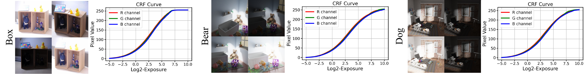
168 photorealistic indoor scenes rendered in Blender for generalizable HDR reconstruction.
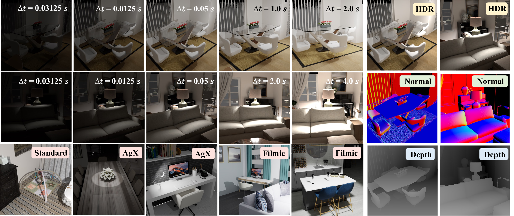
@inproceedings{ye2026instanthdr,
title = {InstantHDR: Single-Forward Gaussian Splatting
Initialization for HDR 3D Reconstruction},
author = {Ye, Dingqiang and Xu, Jiacong and Ping, Jianglu and
Guo, Yuxiang and Fan, Chao and Patel, Vishal M.},
booktitle = {Computer Vision -- ECCV 2026},
year = {2026},
publisher = {Springer}
}